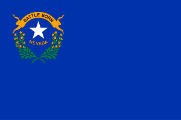
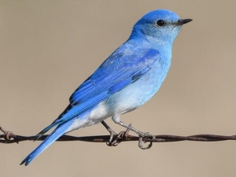
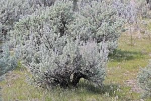
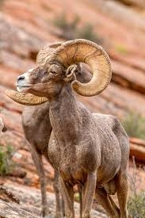
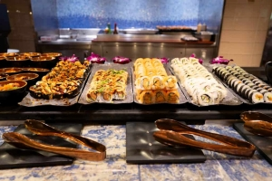
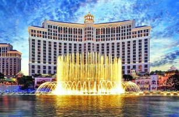

Navigation Buttons
Cities and landmarks
Places to visit
Politics
Source
Did you know?
The National bird of the state of Nevada is the Mountain Bluebird. Due to the structure of its feathers it reflects light in a way that makes it blue.
The state flower is the Sagebrush. It's crucial to keep many of the plants in the desert alive due to the shadow they provide.
The state animal is the Desert Bighorn Sheep. It's quick and agile for its size. Perfect for the rocky terrain that Nevada has.
Back to top
Nevada
Nevada is an inhospitable place, yet it is still sprawling with life. From animals to cities of sin. Nevada truly has everything taboo and tempting inside its borders. Las Vegas being the pinnacle of what people consider "Nevadan". Though the real capital lies far northwest of Las Vegas. The real fun is in the south with amazing views like the night lights of Las Vegas or the giant construct known as Hoover Dam. With a rich history and many chances to indulge, will you let Nevada be your next vacation spot?


Landmarks
Though Nevada is one of the most sparsely populated states in the USA, it still has plenty of landmarks to show us. From the Hoover Dam all the way to Carson City. All these are way different from each other. Carson City being the state capital. Even though it's the capital, the amount of people that live there is 12 times less than in the main city of Las Vegas. Las Vegas is otherwise known as the city of sin. It's set itself as an oasis of greed in the vast desert that surrounds it. Many taboo things are encouraged like gambling and easy to get alcohol. Las Vegas has it all. Hotels, casinos, clubs, everything your heart desires.
We of course have natural landmarks as well, and due to the scorching heat some have gotten some pretty unique names. Like Death Valley, the hottest place in the United States. Valley of Fire is another one, named after the red look the sandstone gives it. If you look past all the harshness of the deserts, you can see some beautiful areas. Lake Tahoe is a perfect example of that. A lake deep in the mountains that has water as clear as glass. From hiking to going on city adventures, Nevada has it all. With the booming tourist industry, it's an amazing place to spend your vacation at.


Fun Fact: The Devils Hole pupfish is the most endangered fish in the world. It only lives in one single hole in all of Nevada. It has entirely prevented building near its habitat. Even so, it has survived an assassination attempt by a felon with a firearm. Currently, they managed to move some of the fish to an artificial habitat to preserve the species.
 